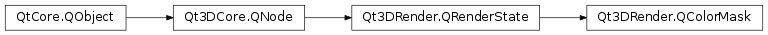

Qt3DRender.QColorMask¶
Synopsis¶
Functions¶
- def
isAlphaMasked() - def
isBlueMasked() - def
isGreenMasked() - def
isRedMasked()
Slots¶
- def
setAlphaMasked(alphaMasked) - def
setBlueMasked(blueMasked) - def
setGreenMasked(greenMasked) - def
setRedMasked(redMasked)
Signals¶
- def
alphaMaskedChanged(alphaMasked) - def
blueMaskedChanged(blueMasked) - def
greenMaskedChanged(greenMasked) - def
redMaskedChanged(redMasked)
Detailed Description¶
Allows specifying which color components should be written to the currently bound frame buffer.
By default, the property for each color component (red, green, blue, alpha) is set to
truewhich means they will be written to the frame buffer. Setting any of the color component tofalsewill prevent it from being written into the frame buffer.
-
class
PySide2.Qt3DRender.Qt3DRender.QColorMask([parent=nullptr])¶ Parameters: parent – PySide2.Qt3DCore.Qt3DCore::QNodeConstructs a new Qt3DCore::QColorMask instance with
parentas parent.
-
PySide2.Qt3DRender.Qt3DRender.QColorMask.alphaMaskedChanged(alphaMasked)¶ Parameters: alphaMasked – PySide2.QtCore.bool
-
PySide2.Qt3DRender.Qt3DRender.QColorMask.blueMaskedChanged(blueMasked)¶ Parameters: blueMasked – PySide2.QtCore.bool
-
PySide2.Qt3DRender.Qt3DRender.QColorMask.greenMaskedChanged(greenMasked)¶ Parameters: greenMasked – PySide2.QtCore.bool
-
PySide2.Qt3DRender.Qt3DRender.QColorMask.isAlphaMasked()¶ Return type: PySide2.QtCore.bool
-
PySide2.Qt3DRender.Qt3DRender.QColorMask.isBlueMasked()¶ Return type: PySide2.QtCore.bool
-
PySide2.Qt3DRender.Qt3DRender.QColorMask.isGreenMasked()¶ Return type: PySide2.QtCore.bool
-
PySide2.Qt3DRender.Qt3DRender.QColorMask.isRedMasked()¶ Return type: PySide2.QtCore.bool
-
PySide2.Qt3DRender.Qt3DRender.QColorMask.redMaskedChanged(redMasked)¶ Parameters: redMasked – PySide2.QtCore.bool
-
PySide2.Qt3DRender.Qt3DRender.QColorMask.setAlphaMasked(alphaMasked)¶ Parameters: alphaMasked – PySide2.QtCore.boolSee also
PySide2.Qt3DRender.Qt3DRender::QColorMask.isAlphaMasked()
-
PySide2.Qt3DRender.Qt3DRender.QColorMask.setBlueMasked(blueMasked)¶ Parameters: blueMasked – PySide2.QtCore.boolSee also
PySide2.Qt3DRender.Qt3DRender::QColorMask.isBlueMasked()
-
PySide2.Qt3DRender.Qt3DRender.QColorMask.setGreenMasked(greenMasked)¶ Parameters: greenMasked – PySide2.QtCore.boolSee also
PySide2.Qt3DRender.Qt3DRender::QColorMask.isGreenMasked()
-
PySide2.Qt3DRender.Qt3DRender.QColorMask.setRedMasked(redMasked)¶ Parameters: redMasked – PySide2.QtCore.boolSee also
PySide2.Qt3DRender.Qt3DRender::QColorMask.isRedMasked()
© 2018 The Qt Company Ltd. Documentation contributions included herein are the copyrights of their respective owners. The documentation provided herein is licensed under the terms of the GNU Free Documentation License version 1.3 as published by the Free Software Foundation. Qt and respective logos are trademarks of The Qt Company Ltd. in Finland and/or other countries worldwide. All other trademarks are property of their respective owners.